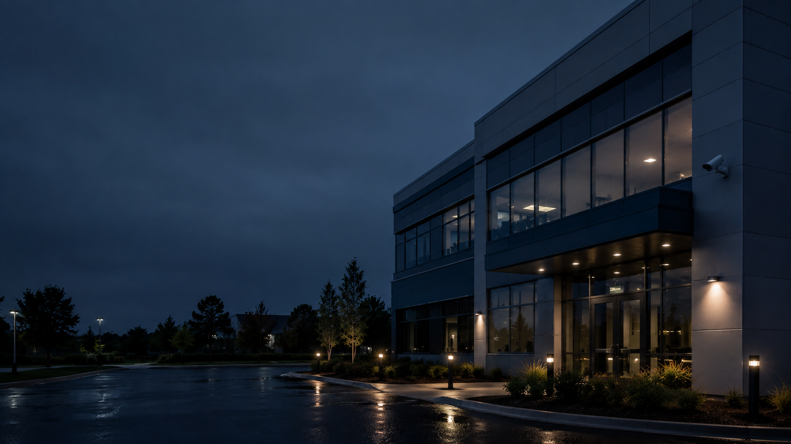
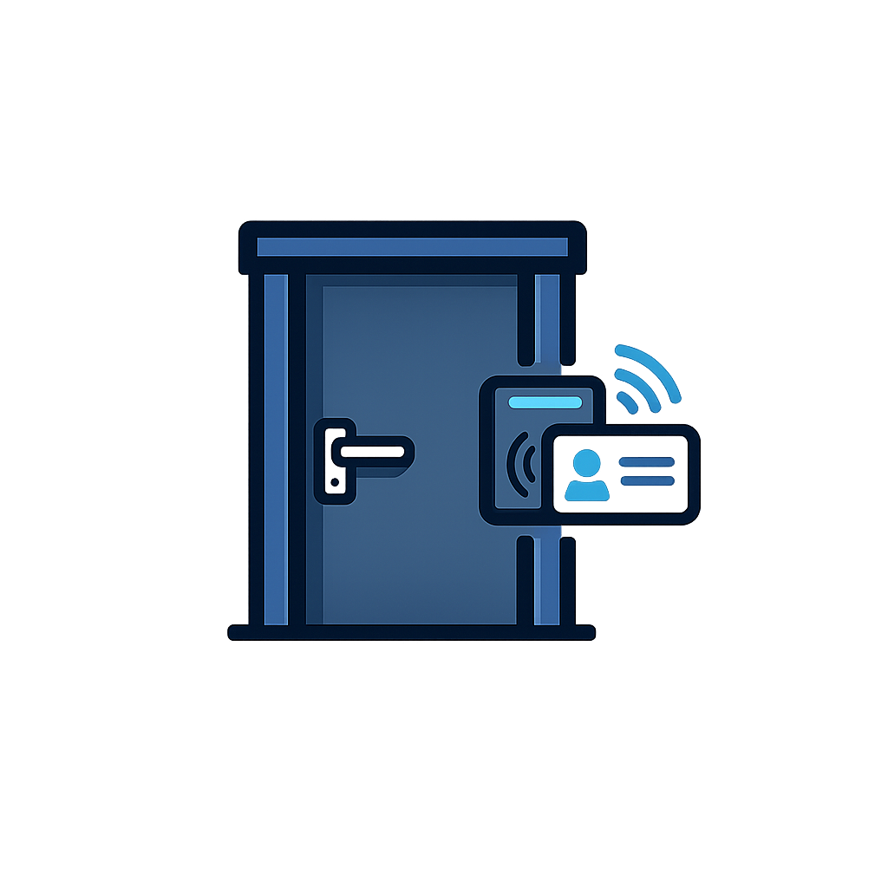
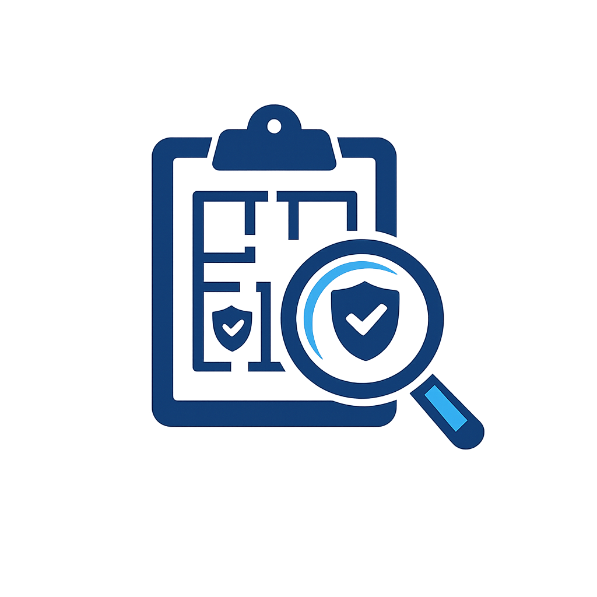
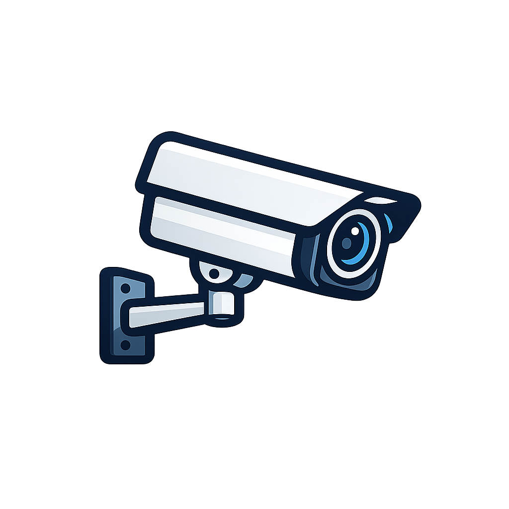

Commercial alarm system planning and installation for businesses, schools, warehouses, retail spaces, managed properties, construction sites, and other commercial environments throughout New Mexico and the Four Corners region.

Call or Text: 505-331-7834
Email: joe@swsa.ai
Serving commercial properties throughout New Mexico and the Four Corners region.
Southwest Security & Automation helps commercial properties plan alarm systems around real risks, real entry points, and the way the property is used each day. The goal is practical coverage that supports the business without adding unnecessary complexity.
Every site has different doors, windows, staff areas, public spaces, operating hours, and after-hours concerns. We focus on useful alarm coverage, clean installation, clear expectations, and a system plan that can be supported after installation.

Entry Protection for doors, windows, overhead doors, service entries, and access points where appropriate
Alarm Planning to decide what should be protected first and where future expansion may make senseCommercial alarm coverage may include entry sensors, motion detection, glass break detection, and other devices depending on the layout and risk profile of the property. Placement matters because the system needs to support real operations and avoid unnecessary frustration.
For some properties, the best plan starts with primary doors and high-value interior areas. For others, storefront glass, warehouse doors, offices, inventory rooms, gates, or perimeter access points may need more attention.
A strong commercial alarm plan starts with the site, not a generic device list. We look at how people enter, where staff work, where inventory or equipment is stored, where customers are allowed, and what areas need different treatment after hours.
From there, we can help plan practical coverage that fits the property, the budget, and the way the system will actually be used.
Alarm systems often work best when they are planned alongside video surveillance and access control. Cameras can add visibility around key areas, while access control can help manage who enters doors, gates, staff spaces, and restricted areas.
If the property needs a broader plan, we can coordinate alarm planning with commercial video surveillance and access control so the system is easier to understand and expand over time.
Monitoring options and response expectations depend on the equipment, service plan, property type, and local conditions. We keep this conversation practical so owners and managers understand what the system is designed to do and what steps happen when an alarm event occurs.
The right setup should make sense for the risk level, operating hours, staff responsibilities, and budget. We avoid promises that no alarm system can honestly guarantee.

Video Surveillance for visibility around alarm areas, doors, gates, parking areas, and key access pointsView Commercial Security Services
Call or Text: 505-331-7834
Email: joe@swsa.ai
Tell us what type of property you have, what areas need alarm coverage, and whether you also need cameras, access control, monitoring options, or a broader commercial security plan.